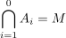

nullary intersection
1. These
Es bietet sich an, für eine Grundmenge  den leeren Schnitt folgendermaßen zu definieren:
den leeren Schnitt folgendermaßen zu definieren:

1
z.b. für die Mengen in einer Topologie Dabei muss man eine Grundmenge definieren, so dass man nicht einen Widerspruch wie Russell's paradox erzeugt.